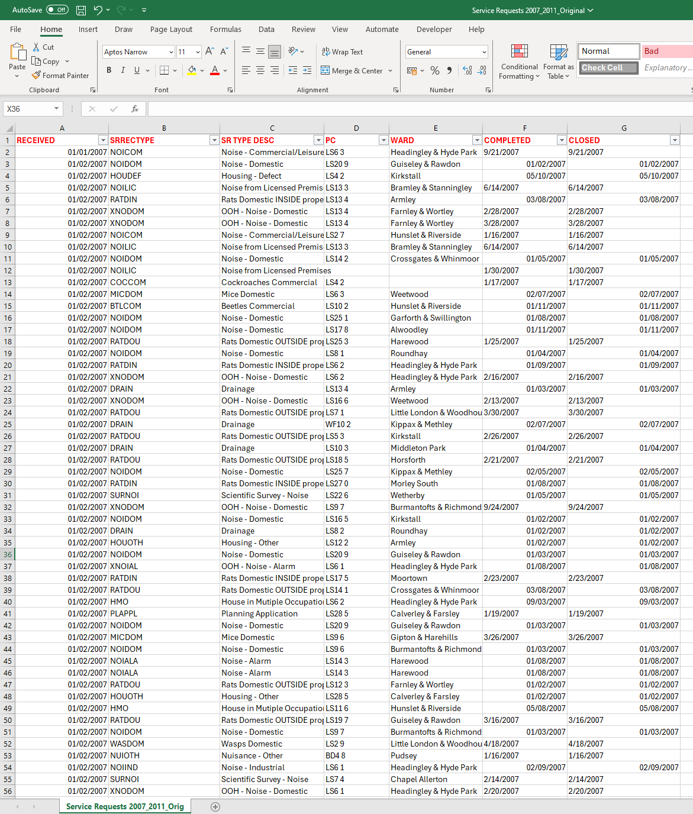
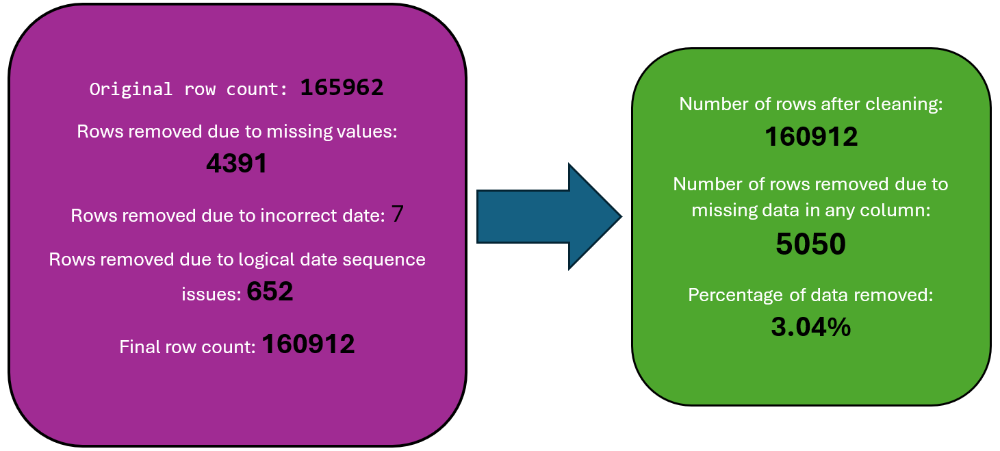
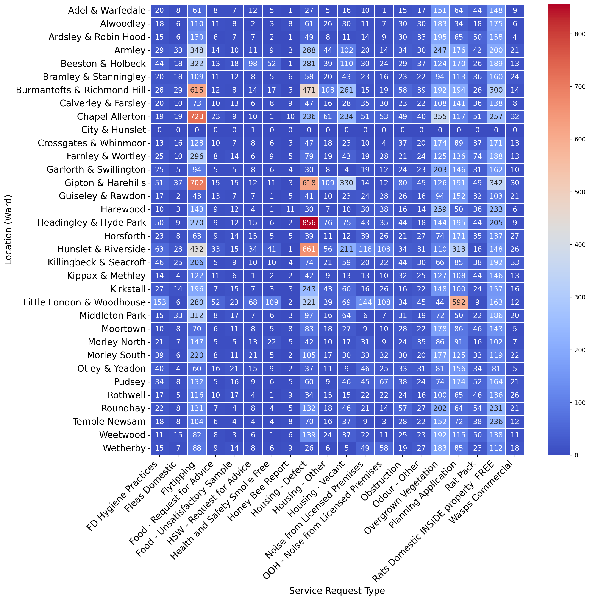
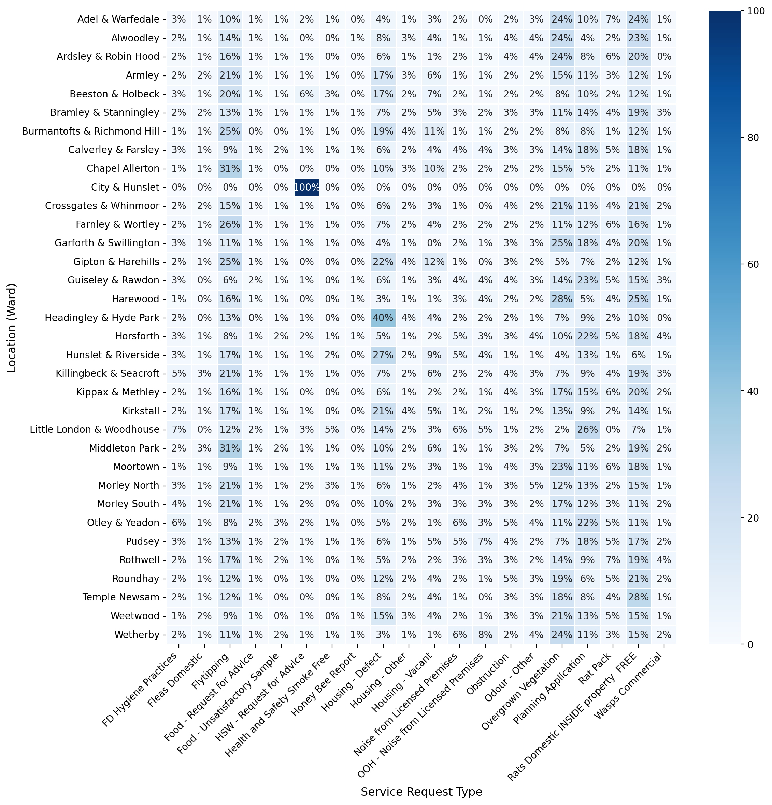
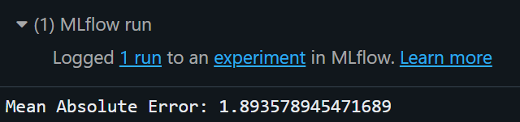
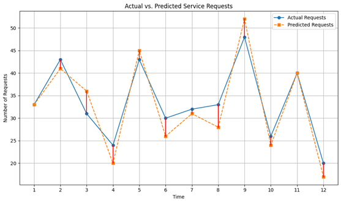

Number of locations: 34
Number of service request types: 282Green Aid Project Report
Service Requests From Leeds Council From 2007-2011
Introduction
In an era where urban areas are increasingly pressured by population growth, environmental concerns, and the need for sustainable development, the role of local councils has become pivotal in managing the balance between urban expansion and environmental conservation. Service requests to councils are a direct line of communication from residents to their local government, serving as a barometer for community needs and priorities.
Leeds, a bustling metropolis in the United Kingdom, has been at the forefront of this challenge. With its commitment to addressing environmental issues and enhancing the quality of life for its citizens, this project symbolizes a concerted effort to respond to service requests in a manner that aligns with sustainable practices and ecological stewardship.
Objectives of the Green Aid Project
The Green Aid Project, established by the Leeds City Council, aims to capitalize on these investments by improving environmental services, enhancing the energy efficiency of council housing, and fostering sustainable development across Leeds. The project underscores the council’s commitment to not only address immediate service requests but also to ensure long-term environmental well-being and resilience.
Scope of the Report
Considering the council’s significant investments and the recent challenges faced, this report provides a comprehensive analysis of service requests submitted to Leeds City Council from 2007 to 2011. The report will examine the types and frequencies of requests, their spatial and temporal distribution, and the council’s forecasted service needs. By doing so, we aim to extract actionable insights that will support the objectives of the Green Aid Project and contribute to Leeds’ sustainable development goals.
Data Cleaning Summary
The dataset contains service request records from Leeds City Council spanning 2007 to 2011 (Environmental Service Requests). It offers a granular view of community needs and council responsiveness across various locations and service categories. With over 160,000 entries, the data provides an extensive canvas for understanding the dynamics of service requests within the city.


Types of Analysis & Findings
This section provides an overview of the various analyses conducted as part of the Green Aid Project, offering insights into service request trends, types, and other significant findings derived from the data.
Annual Trend of Service Request
Number of Service Requests by Location
Top 20 Service Request Types
Top 20 Service Request Types by Location (Heatmap)

Top 20 Service Request Types by Location (Heatmap in percentages)

Historical & Forcast Analysis
Conclusion
The Green Aid Project report reveals significant progress towards enhancing Leeds’ environmental sustainability and service efficiency from 2007 to 2011. By analysing service requests submitted to Leeds City Council, the report highlights fluctuations in community needs, with notable trends in overgrown vegetation, fly-tipping, and housing defects. Predictive insights suggest a decrease in service requests by 2024, reflecting the positive impact of the council’s sustainable interventions.
This project is a pivotal step in Leeds City Council’s commitment to sustainable development, providing a foundation for strategic planning and resource allocation. initiatives. Moving forward, it is essential for the council to leverage these insights to guide future actions, ensuring continued alignment with the goal of improving residents’ quality of life.
Modelling
The Gradient Boosting Regressor is adept at uncovering complex, nonlinear relationships between the target and features of your model. It offers remarkable flexibility, effortlessly managing missing data, outliers, and categorical values with high cardinality, all without needing special preprocessing.


“Imagine if we were trying to guess the exact number of steps from the entrance to the back of a large store, and on average, our guess was only about 1.89 steps off. That’s how our model predicts the number of service requests—it’s typically just 1.89 requests away from the actual number. It’s like being really close to the right spot, almost spot-on, every time we make a guess.”
Limitations
Challenges Encountered
• Publishing Limitations: Unable to publish work from stakeholders’ local drivers directly to the posit server.
• Data Access Complexity: Downloading files from the data lake to stakeholders’ local systems proved to be highly complicated.
• Outdated Documentation: The instructions provided in the dashboard playbook were unclear and possibly outdated.
• Tool Compatibility Issues: Quarto lacks adequate support for Python users within Databricks environments.
Successes Achieved
• Efficient Publishing Tools: RStudio successfully published directly to the posit server with ease.
• Enhanced Internal Communication: Utilized PowerBI on our internal server for effective publishing and data visualisation.